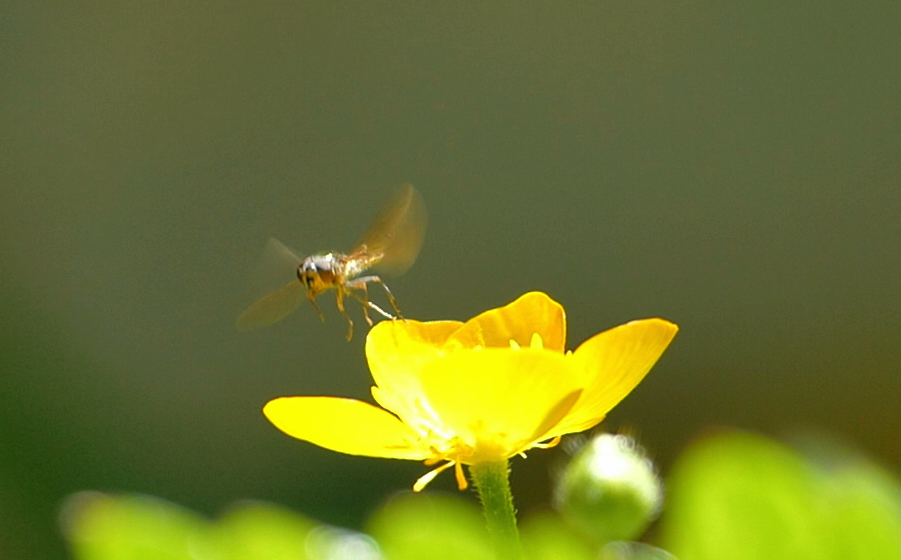
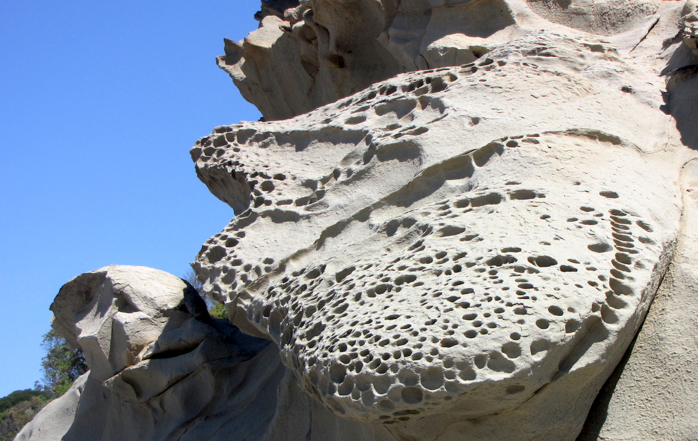
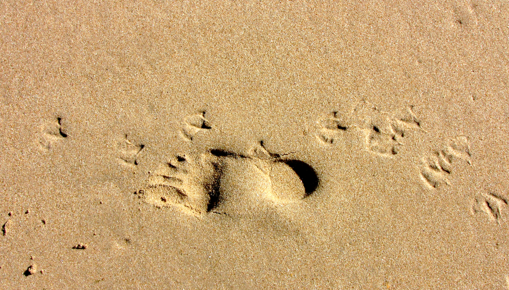

Hello!
Trevor
outlined text
Outlined text 2
More about Trevorblum.name
Image_1 Airborne

image_2 Native bee at work
image_3 I show up best against red, I think
image_4 Native bee, camera shy
image_5 Fungi in Wrights Forest
image_6
image_7 Shadowed existence
image_8 Tread softly?
image_9 Wholly acceptable

image_10 Two printers

image_11 Worm tracks
image_12 Leaves as a concrete image
image_13 Autumn roof
image_14 You can't see me. Can you?
image_15 Cai Giuo Gunpowder 'paintings' at NGV
image_16 Multifocus beetle
image_17 What's so hard about walking on water ?
image_18 Broken fern
image_19 Colourful fungi patch, Emerald
image_20
image_21 Brains for lunch
image_22 Yeah I know(bottom right) NGV
image_23 shadows and Dragonfly
image_23 Patricia Piccinini at Healesville
footer notes
URL download image


 URL download image
URL download image